Before a single cable goes in, the IP addressing plan lays the foundation for everything. AcmeCorp uses 10.0.0.0/8 (RFC 1918 private space) split hierarchically by region and purpose — making routes easy to summarise and the network easy to scale.
| Block | Region / Purpose | Notes |
|---|---|---|
| 10.1.x.x | APAC — HQ Sydney | Primary site |
| 10.2.x.x | EMEA | Future expansion |
| 10.3.x.x | AMER | Future expansion |
| 10.9.x.x | Data Centre | Shared services |
| Network | Mask | Purpose | Usable Hosts |
|---|---|---|---|
| 10.1.1.0 | /24 | HQ LAN — End devices | 254 |
| 10.1.9.0 | /24 | Management VLAN | 254 |
| 10.1.254.0 | /30 | WAN — HQ to ISP | 2 |
| Device | Interface | IP Address | Mask |
|---|---|---|---|
| HQ-SYD-R1 | Serial0/1/0 | 10.1.254.1 | /30 |
| ISP-CORE | Serial0/1/0 | 10.1.254.2 | /30 |
/24s for LANs — 254 usable hosts, easy to remember, clean to summarise at the /20 level per site.
/30s for WAN links — point-to-point links only need 2 hosts. Using a /30 wastes only 2 addresses instead of 252.
10.x.9.x for management — keeping management traffic on a dedicated subnet makes it easy to apply ACLs later and restrict who can reach device management interfaces.
Phase 2 translates the IP design into a real (simulated) network. Devices are placed in Packet Tracer, cabled according to the topology, and initial interface configurations are applied so the WAN link between HQ and the ISP is live.
| Hostname | Model | Role |
|---|---|---|
| ISP-CORE | ISR4331 | ISP router (simulated) |
| HQ-SYD-R1 | ISR4331 | HQ Sydney edge router |
| HQ-SYD-SW-CORE | 3560-24PS | Core distribution switch |
| HQ-SYD-SW-FLOOR1 | 2960-24TT | Floor 1 access switch |
| HQ-SYD-SW-FLOOR2 | 2960-24TT | Floor 2 access switch |
| HQ-SYD-SERVER | Server-PT | Internal server |
| HQ-PC1 to HQ-PC4 | PC-PT | End user workstations |
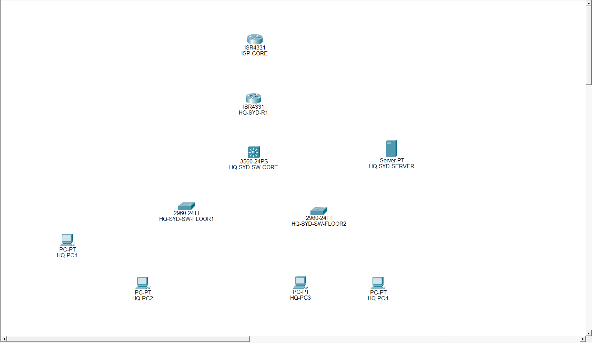
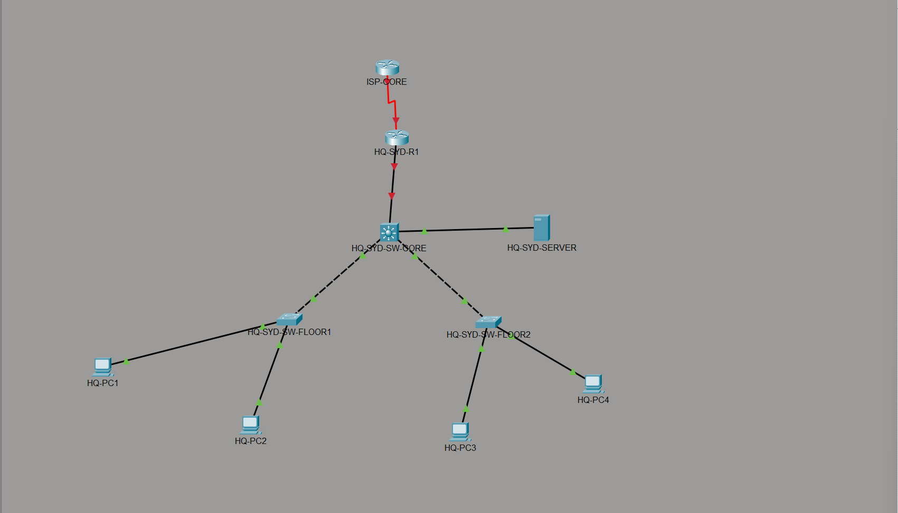
interface GigabitEthernet0/0/0 ip address 10.1.1.1 255.255.255.0 no shutdown interface Serial0/1/0 ip address 10.1.254.1 255.255.255.252 no shutdown
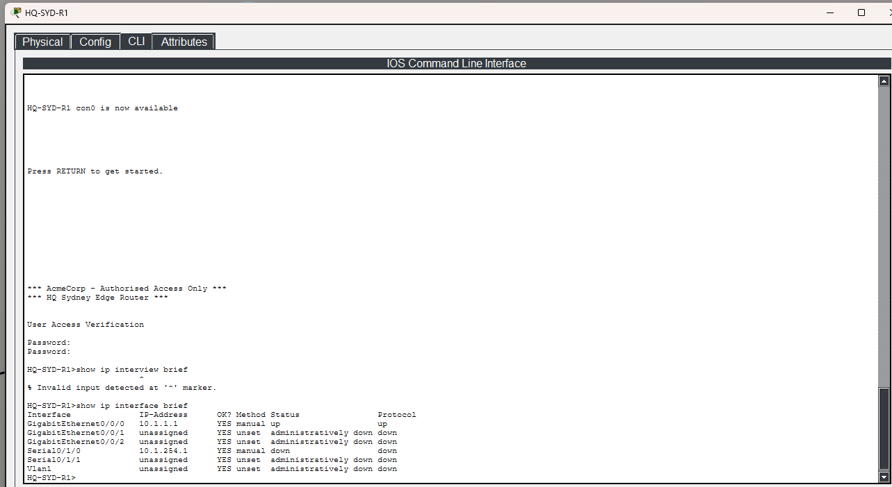
hostname ISP-CORE no ip domain-lookup interface Serial0/1/0 description TO_HQ-SYD-R1 ip address 10.1.254.2 255.255.255.252 no shutdown
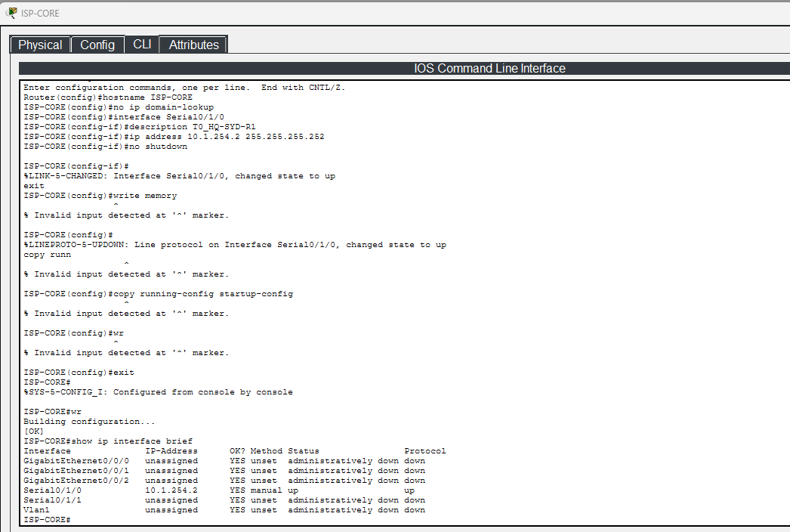
With both serial interfaces configured, the WAN link came up. First ping from HQ-SYD-R1 to ISP-CORE confirmed end-to-end connectivity across the serial link.
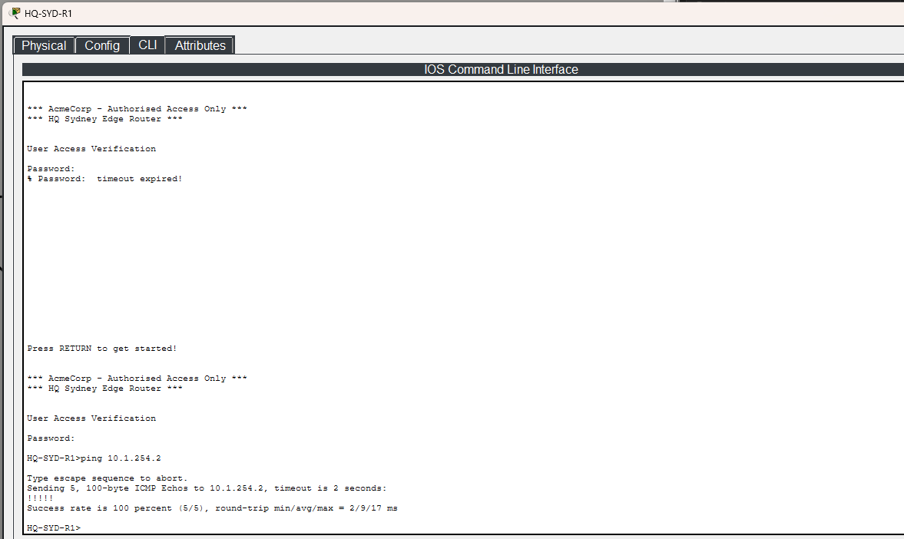
interface Vlan1 description MANAGEMENT ip address 10.1.9.1 255.255.255.0 no shutdown ip default-gateway 10.1.1.1
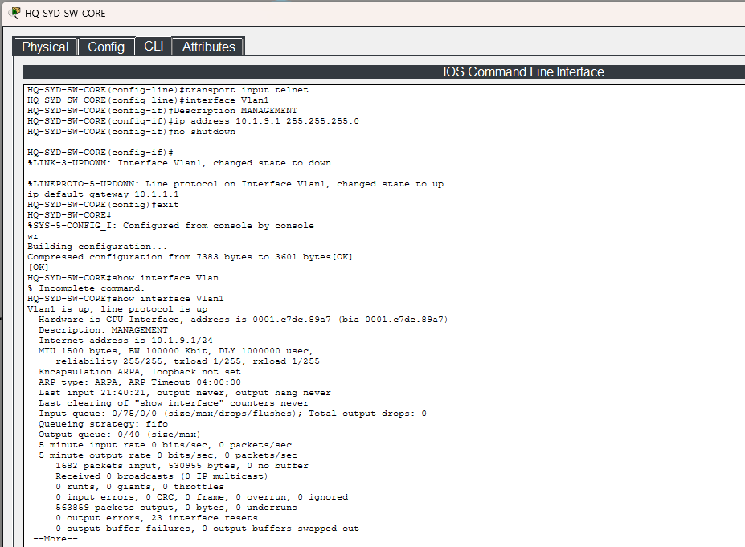
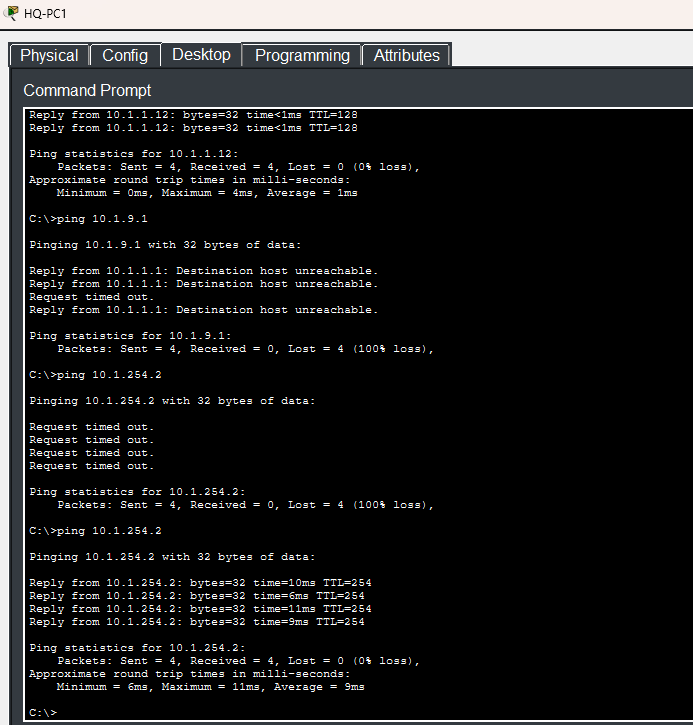
write memory (or copy running-config startup-config) must be run from privileged EXEC mode (#), not from config mode. Trying it in (config)# throws an invalid input error.
exit backs you out one level at a time. Ctrl+Z jumps straight back to # from anywhere in config mode — much faster when you need to run a show command quickly.
PC1 could ping HQ-SYD-R1 fine, but pings to ISP-CORE were timing out. The router had the correct outbound route, but the ISP had no return route back to 10.1.1.0/24. Fixed by adding a static route on ISP-CORE:
ip route 10.1.1.0 255.255.255.0 10.1.254.1
When the outbound path works but the return path doesn't — this is called asymmetric routing. Traffic flows out fine but replies never make it back. Always verify both directions when troubleshooting connectivity.
VLANs (Virtual LANs) split a single physical switch into multiple isolated logical networks. Instead of buying separate switches for each department, one switch can carry Users, Servers, Management, and Native traffic completely isolated from each other — unless you explicitly allow them to talk.
Why does this matter? A PC on the USERS VLAN can't sniff traffic from the SERVERS VLAN even though they're on the same physical switch. Security and performance in one shot.
| VLAN ID | Name | Subnet | Purpose |
|---|---|---|---|
| 10 | USERS | 10.1.1.0/24 | End user workstations (PC1–PC4) |
| 20 | SERVERS | 10.1.2.0/24 | Internal server (HQ-SYD-SERVER) |
| 30 | VOIP | 10.1.3.0/24 | Voice over IP devices |
| 99 | MANAGEMENT | 10.1.9.0/24 | Switch management + native VLAN on trunks |
configure terminal vlan 10 name USERS vlan 20 name SERVERS vlan 30 name VOIP vlan 99 name MANAGEMENT exit wr
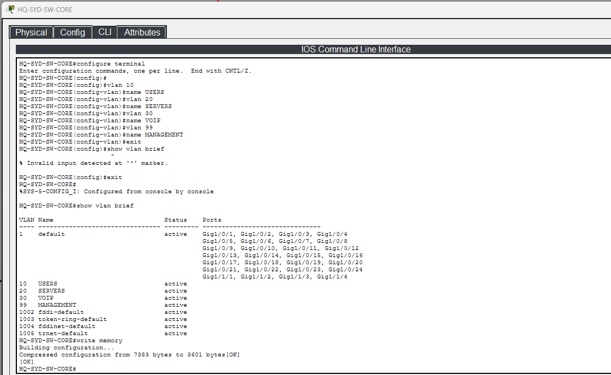
The router needs to route between VLANs. Instead of running a separate cable per VLAN, we use one trunk link carrying all VLANs tagged with 802.1Q. The router uses subinterfaces — one per VLAN.
interface GigabitEthernet1/0/1 description TRUNK_TO_HQ-SYD-R1 switchport mode trunk switchport trunk allowed vlan 10,20,30,99 switchport trunk native vlan 99 exit wr
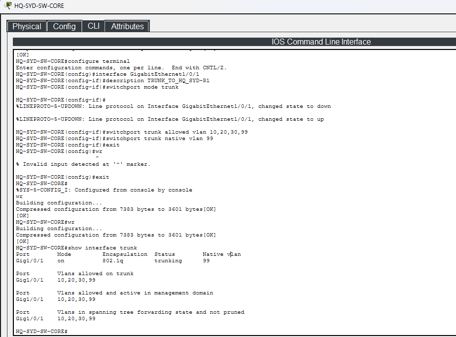
interface GigabitEthernet1/0/2 description TRUNK_TO_HQ-SYD-SW-FLOOR1 switchport mode trunk switchport trunk allowed vlan 10,20,30,99 switchport trunk native vlan 99 interface GigabitEthernet1/0/3 description TRUNK_TO_HQ-SYD-SW-FLOOR2 switchport mode trunk switchport trunk allowed vlan 10,20,30,99 switchport trunk native vlan 99 exit wr
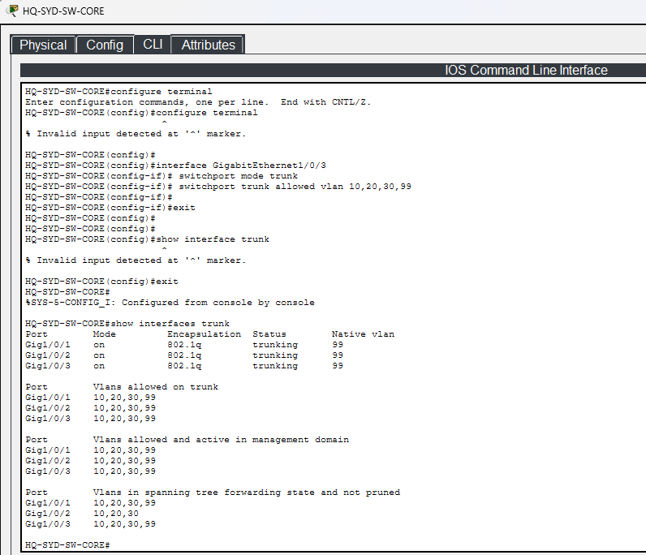
HQ-SYD-SERVER connects directly to the core switch and needs to be placed in VLAN 20 (SERVERS).
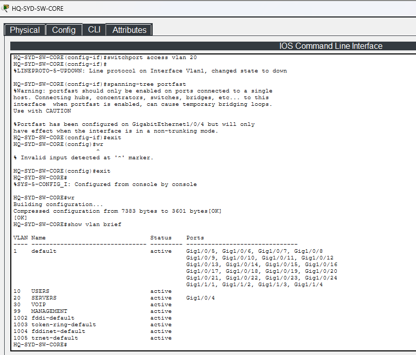
One physical router interface becomes multiple logical subinterfaces — one per VLAN. Each subinterface is tagged with the VLAN ID using encapsulation dot1Q and gets the gateway IP for that VLAN.
interface GigabitEthernet0/0/0.10 description USERS_VLAN10 encapsulation dot1Q 10 ip address 10.1.1.1 255.255.255.0 interface GigabitEthernet0/0/0.20 description SERVERS_VLAN20 encapsulation dot1Q 20 ip address 10.1.2.1 255.255.255.0 interface GigabitEthernet0/0/0.30 description VOIP_VLAN30 encapsulation dot1Q 30 ip address 10.1.3.1 255.255.255.0 interface GigabitEthernet0/0/0.99 description MANAGEMENT_VLAN99 encapsulation dot1Q 99 native ip address 10.1.9.1 255.255.255.0
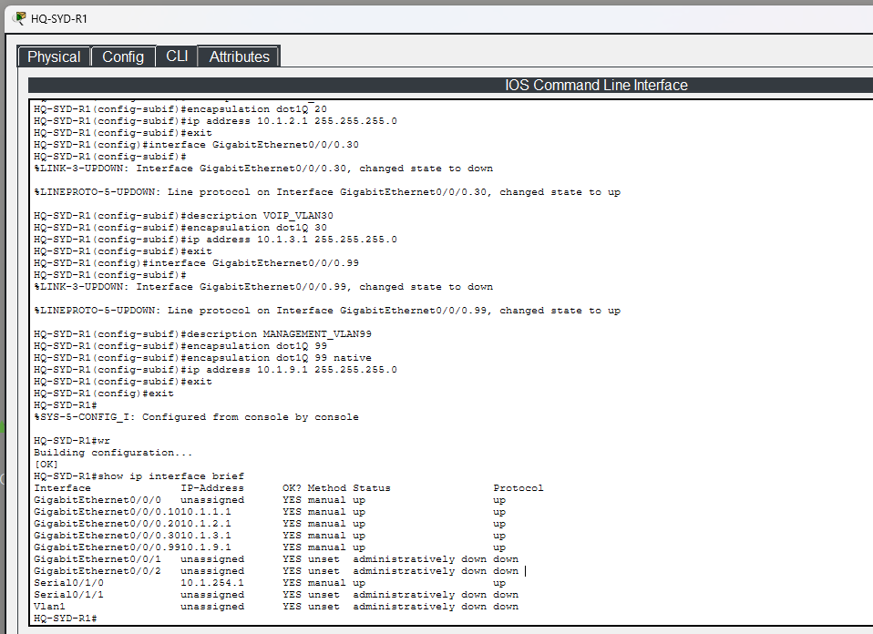
interface FastEthernet0/1 description HQ-PC1 switchport mode access switchport access vlan 10 spanning-tree portfast interface FastEthernet0/2 description HQ-PC2 switchport mode access switchport access vlan 10 spanning-tree portfast
interface FastEthernet0/1 description HQ-PC3 switchport mode access switchport access vlan 10 spanning-tree portfast interface FastEthernet0/2 description HQ-PC4 switchport mode access switchport access vlan 10 spanning-tree portfast
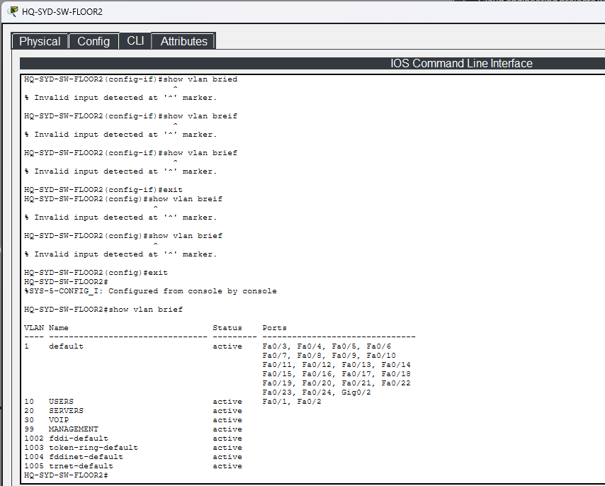
The final test — PC1 on VLAN 10 (10.1.1.x) pinging the server on VLAN 20 (10.1.2.x). Traffic has to go from PC1 → Floor switch → Core switch → Router → Core switch → Server. If this works, inter-VLAN routing is confirmed end-to-end.
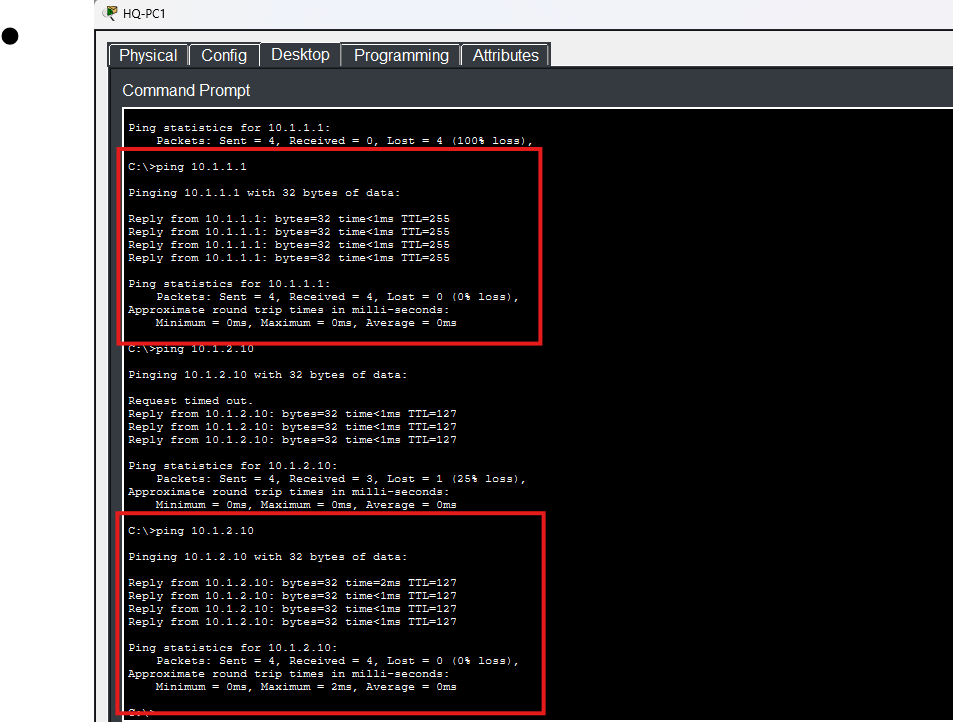
After configuring trunk on HQ-SYD-SW-CORE with native VLAN 99, a CDP warning appeared:
Native VLAN mismatch discovered on GigabitEthernet1/0/2 (99), with HQ-SYD-SW-FLOOR1 GigabitEthernet0/1 (1)
This means the core switch expects native VLAN 99 on the trunk, but the floor switch still has the default native VLAN 1. Fix: set native VLAN 99 on the floor switches too so both ends match.
interface GigabitEthernet0/1 switchport trunk native vlan 99
A trunk link has two ends. If VLAN 99 is native on one side and VLAN 1 on the other, frames get misclassified — untagged traffic lands in the wrong VLAN. Always set native VLAN consistently across all trunk ports.
By default STP makes a port wait 30 seconds before forwarding (listening → learning → forwarding). End devices don't need this — they'll never create loops. portfast skips the delay so PCs connect instantly.
Phase 4 expands AcmeCorp from a single HQ site into a proper multi-site enterprise. Four offices — Sydney, Tokyo, Singapore, and London — are connected through ISP-CORE using OSPF (Open Shortest Path First). Instead of manually configuring static routes between every site, OSPF automatically advertises and learns routes across the entire network. Add a new subnet, OSPF tells everyone about it automatically.
Why OSPF over static? With 4 sites and multiple subnets per site, static routes become unmanageable fast. OSPF scales cleanly — every router discovers its neighbours, exchanges link-state information, and builds a full map of the network independently.
| Site | Router | Router ID | LAN Subnet | WAN Link |
|---|---|---|---|---|
| HQ Sydney | HQ-SYD-R1 | 1.1.1.1 | 10.1.1.0/24 | 10.1.254.0/30 |
| ISP Core | ISP-CORE | 2.2.2.2 | Transit only | All WAN links |
| Tokyo | TK-R1 | 3.3.3.3 | 10.1.17.0/24 | 10.1.254.4/30 |
| Singapore | SG-R1 | 4.4.4.4 | 10.1.33.0/24 | 10.1.254.8/30 |
| London | LON-R1 | 5.5.5.5 | 10.2.1.0/24 | 10.2.254.0/30 |
Each router runs the same OSPF pattern — unique router ID, networks advertised into Area 0, and passive interfaces on LAN-facing ports so OSPF hellos don't get sent to end devices.
router ospf 1 router-id 1.1.1.1 network 10.1.1.0 0.0.0.255 area 0 network 10.1.254.0 0.0.0.3 area 0 passive-interface GigabitEthernet0/0/0
router ospf 1 router-id 2.2.2.2 network 10.1.254.0 0.0.0.3 area 0 network 10.1.254.4 0.0.0.3 area 0 network 10.1.254.8 0.0.0.3 area 0 network 10.2.254.0 0.0.0.3 area 0
show ip ospf neighbor ! Check adjacency state — want FULL show ip route ospf ! See OSPF-learned routes (marked O) show ip interface brief ! Check interface status show controllers Serial0/x/x ! Check DCE/DTE and clock rate
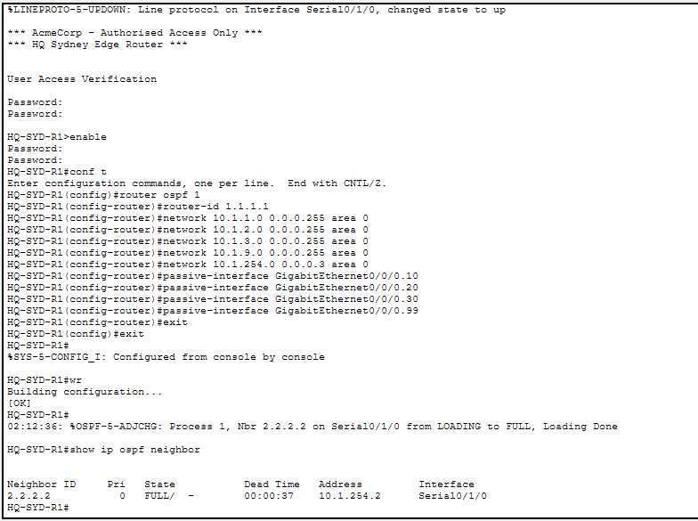
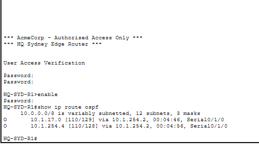
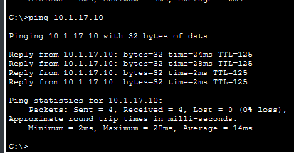
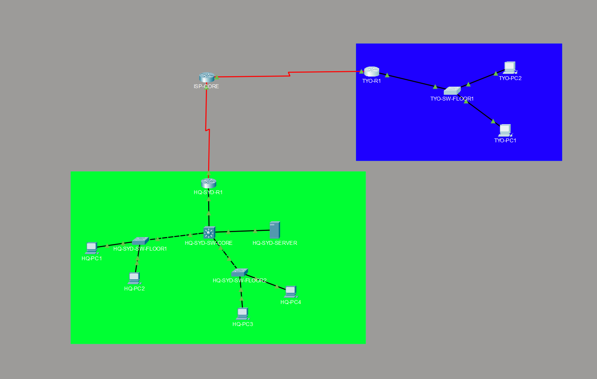
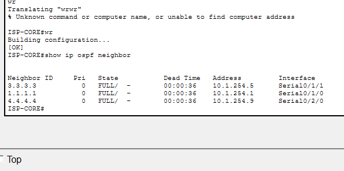
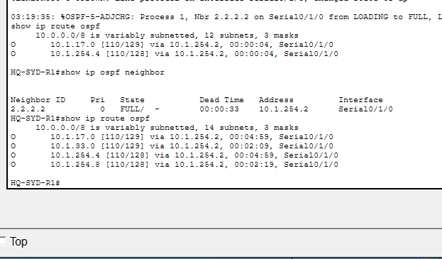
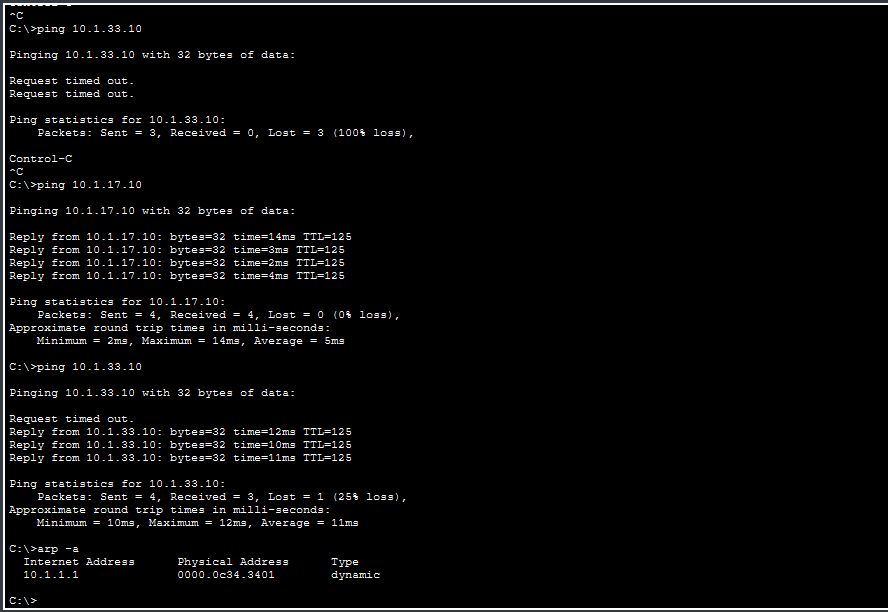
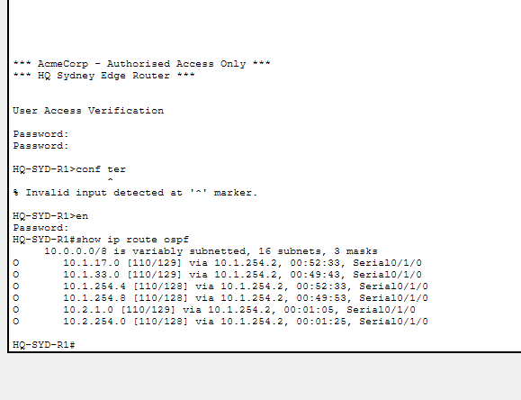

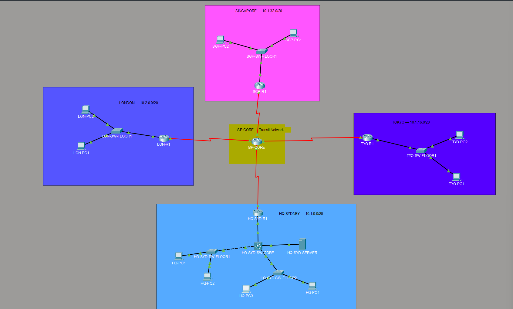
Tokyo PCs were on VLAN 10 on the access switch, but the router had no subinterfaces configured for inter-VLAN routing. Fixed by moving the ports back to VLAN 1 so traffic could reach the router directly without needing subinterfaces at this stage.
After adding a second NIM-2T module to ISP-CORE to support the Singapore serial link, the router had been powered off and not restarted. OSPF adjacency never formed because the router wasn't running. Powered it back on — adjacency came up immediately.
The serial link between ISP-CORE and LON-R1 stayed down after cabling. Used show controllers Serial0/x/x to check DCE/DTE — the wrong end had been selected as DCE. The DCE end must have clock rate configured or the link stays down. Recabled with the correct end as DCE.
The cable physically landed on Serial0/2/1 but the IP address was configured on Serial0/1/0. Interface showed up but no connectivity. Verified with show ip interface brief — moved the IP to the correct interface.
OSPF sends Hello packets every 10 seconds on ethernet links. Routers on the same subnet hear each other's hellos and form an adjacency. If hellos stop for 40 seconds (dead interval), the neighbour is declared down.
OSPF adjacency goes through several states — INIT, 2-WAY, EXSTART, EXCHANGE, LOADING, then FULL. FULL means the two routers have exchanged their complete link-state databases and routes are being used. Anything less than FULL means something is wrong.
Every OSPF router needs a unique Router ID across the entire network. Duplicate IDs cause adjacency problems. Best practice is to set it manually with router-id X.X.X.X rather than letting OSPF pick one automatically from interface IPs.
By default OSPF sends hellos out every interface in the network statement. LAN interfaces facing end devices don't need this — it wastes bandwidth and confuses PCs. passive-interface stops hellos on that port while still advertising the subnet into OSPF.
OSPF network statements use wildcard masks, not subnet masks. A /24 subnet mask is 255.255.255.0, so the wildcard is 0.0.0.255. A /30 is 255.255.255.252, wildcard is 0.0.0.3. Flip every bit.
On serial links, one end is DCE (provides the clock signal) and the other is DTE. The DCE end needs clock rate set or the link stays down. show controllers Serial0/x/x tells you which end you're on — look for "DCE" or "DTE" in the output.
Instead of manually assigning IPs to every PC across 4 sites, DHCP pools on each branch router hand out addresses automatically. HQ runs 3 pools — Users, Servers, and VoIP. First 9 IPs on every subnet are excluded to protect infrastructure addresses (routers, switches, servers).
ip dhcp excluded-address 10.1.1.1 10.1.1.9 ip dhcp excluded-address 10.1.2.1 10.1.2.9 ip dhcp excluded-address 10.1.3.1 10.1.3.9 ip dhcp pool HQ-USERS network 10.1.1.0 255.255.255.0 default-router 10.1.1.1 dns-server 8.8.8.8 ip dhcp pool HQ-SERVERS network 10.1.2.0 255.255.255.0 default-router 10.1.2.1 dns-server 8.8.8.8 ip dhcp pool HQ-VOIP network 10.1.3.0 255.255.255.0 default-router 10.1.3.1 dns-server 8.8.8.8
show ip dhcp binding ! See all assigned leases show ip dhcp pool ! Pool stats and usage show ip dhcp conflict ! Check for conflicts (want: empty)
Discover — PC broadcasts "anyone got an IP for me?"
Offer — DHCP server replies with a proposed IP
Request — PC formally requests that IP
Acknowledge — Server confirms the lease
Every IP assigned automatically without touching a single PC manually.
This phase hasn't started yet. Documentation will be added as work progresses.
Built a simulated internet using an INTERNET-SIM router and WEB-SERVER. PAT (NAT overload) on HQ-SYD-R1 translates all private 10.x.x.x addresses to a single public IP 203.0.115.2. HQ-PC1 successfully browsed a webpage through NAT — the final proof of end-to-end internet connectivity.
! Define inside and outside interfaces interface GigabitEthernet0/0/0 ip nat inside interface Serial0/1/0 ip nat outside ! ACL to match private traffic to translate access-list 1 permit 10.0.0.0 0.255.255.255 ! PAT — translate to outside interface IP ip nat inside source list 1 interface Serial0/1/0 overload ! Default route toward ISP ip route 0.0.0.0 0.0.0.0 10.1.254.2
NAT was overloading to the wrong interface — the private-side interface instead of the public-side. Fixed by specifying the correct outside interface in the NAT overload statement.
Packets were being translated but had nowhere to go — no default route existed pointing toward the ISP. Added ip route 0.0.0.0 0.0.0.0 toward ISP-CORE.
Outbound packets reached the web server but replies dropped — INTERNET-SIM had no route back to the NAT public subnet 203.0.115.0/30. Added a static return route.
Two default routes with equal metrics were installed simultaneously, splitting traffic between the primary and backup path. One was pointing the wrong direction causing half of all packets to drop. Removed the conflicting route.
Outbound translation alone isn't enough. The internet-side router must have a return route back to the NAT public IP subnet — otherwise reply packets have nowhere to go and get dropped. Always think about the return path.
show ip nat translations ! See active NAT table entries
Full security hardening across the AcmeCorp network — SSH replacing Telnet on all routers, extended ACLs protecting servers, port security locking floor switch ports to authorised devices, and management ACLs restricting who can SSH to network infrastructure.
ip domain-name acmecorp.local crypto key generate rsa modulus 1024 ip ssh version 2 username admin privilege 15 secret [password] line vty 0 4 transport input ssh login local
! Allow HTTP/HTTPS from users to servers ! Block SSH/Telnet from users to servers ip access-list extended PROTECT-SERVERS permit tcp 10.1.1.0 0.0.0.255 10.1.2.0 0.0.0.255 eq 80 permit tcp 10.1.1.0 0.0.0.255 10.1.2.0 0.0.0.255 eq 443 deny tcp 10.1.1.0 0.0.0.255 10.1.2.0 0.0.0.255 eq 22 deny tcp 10.1.1.0 0.0.0.255 10.1.2.0 0.0.0.255 eq 23 permit ip any any
interface FastEthernet0/1 switchport port-security switchport port-security mac-address sticky switchport port-security violation shutdown
Sticky MAC learning locks each port to the first device that connects. If an unauthorised device plugs in, the port shuts down immediately.
! Only management VLAN can SSH to routers access-list 10 permit 10.1.9.0 0.0.0.255 line vty 0 4 access-class 10 in transport input ssh
User PCs are completely blocked from managing infrastructure. Tested and confirmed — SSH sessions from non-management IPs are terminated immediately.
Once a packet matches a rule, the router acts on it and stops reading. Always put specific rules before general rules. There's an implicit deny all at the bottom of every ACL — anything not explicitly permitted is dropped.
Added a second WAN link via ISP-CORE-2 to simulate dual-ISP connectivity — a core SD-WAN concept. Floating static routes provide automatic failover: if the primary link drops, traffic shifts to the backup path without any manual intervention. Packet Tracer's Simulation mode was used to visualise traffic flowing hop by hop.
! Primary path — lower metric (preferred) ip route 0.0.0.0 0.0.0.0 203.0.115.1 5 ! Backup path — higher metric (only used if primary fails) ip route 0.0.0.0 0.0.0.0 203.0.116.1 10
When the primary link goes down, the metric-5 route disappears from the routing table and the metric-10 backup automatically becomes active.
The underlay is the physical network — routers, cables, ISP links. The overlay is a virtual network built on top — SD-WAN tunnels that abstract the physical links and allow intelligent traffic steering regardless of which physical path is used.
SD-WAN doesn't just pick the shortest path — it classifies traffic by application type and steers it to the best path for that traffic. Video conferencing might go on the low-latency link, bulk data transfers on the cheaper backup link.
Traditional routing: each router makes its own forwarding decisions independently. SD-WAN: a centralised controller makes decisions for all routers simultaneously. The control plane (decisions) is separated from the data plane (actual packet forwarding).
SD-WAN continuously monitors link health — latency, jitter, packet loss. If a link degrades beyond a threshold, traffic automatically shifts to a healthier path. Floating static routes simulate this behaviour in Packet Tracer.
This phase hasn't started yet. Documentation will be added as work progresses.
show ip interface brief ! Interface status and IPs show ip route ! Full routing table show ip ospf neighbor ! OSPF adjacency states show vlan brief ! VLAN assignments show interfaces trunk ! Trunk port status show ip nat translations ! Active NAT entries show ip access-lists ! ACL rules and hit counts show port-security ! Port security status show ip dhcp binding ! DHCP lease table show ip dhcp conflict ! DHCP conflicts (want: empty) show controllers ! Physical serial interface (DCE/DTE) show running-config ! Full device configuration